"Je slaat pauzes over zonder het te merken"
Je schuldig voelen als je rust
Re:Mind helpt je tijdens je werkdag met korte, effectieve pauzes.
Start je balans
Je bent niet alleen. Veel jonge professionals worstelen met hetzelfde patroon.
Re:Mind is een digitale balanscoach voor jonge starters op de arbeidsmarkt. De eerste jaren in je carrière brengen vaak stress, prestatiedruk en lange werkdagen met zich mee.
Even pauzeren is moeilijk of voelt fout aan, maar geen pauzes nemen kan schadelijk zijn.
Dat is precies waar Re:Mind mee helpt. Door korte check-ins en gerichte pauzesuggesties tijdens je werkdag, herstel je sneller, blijf je gefocust en bouw je aan een gezondere werkbalans.
Wij willen jonge starters ondersteunen in het nemen van bewuste, herstellende pauzes tijdens hun werkdag.
Met korte, gerichte interventies helpen we hen om stress te verminderen, focus te behouden en een gezondere balans te ontwikkelen tussen inspanning en herstel.
Een wereld waarin jonge werknemers zich niet schuldig voelen om pauze te nemen als dat nodig is voor hen.

Een pauze moet herstellend werken, niet uitputtend. Re:Mind biedt een uitgebreide collectie van pauzesuggesties en korte hersteloefeningen die gebruikers helpen om tot rust te komen op een gezonde manier. Als je een gezond aantal herstellende pauzes neemt, zal je concentratie verbeteren.

Bij Re:Mind staat de gebruiker centraal. Daarom houden we graag bij hoe het met je gaat doorheen de werkdag. Dit doen we aan de hand van check-ins waar je je stress- en energieniveau kan ingeven. Op basis van deze gegevens kunnen we dan gedetailleerdere inzichten genereren.

Om inzicht te krijgen in je stress- en energieniveaus doorheen je werkdag(en) wordt er op het einde van elke dag en week een rapport opgesteld met verschillende grafieken die handig inzichten weergeven. Hier kan je ook advies vinden over hoe je je stress beter kan aanpakken.

Om ervoor te zorgen dat de gebruiker met een gerust gevoel naar huis gaat aan het einde van de werkdag, hebben we een afsluitroutine geïmplementeerd. Wanneer je aangeeft dat je werkdag op z’n einde is, heb je de mogelijkheid om in te vullen waar je de volgende dag nog aan wil werken. Wanneer de volgende dag aanbreekt, word je er nog eens aan herinnerd.
4 simpele stappen naar een meer gebalanceerde werkdag
Open Re:Mind en start je werk-sessie.
Ontvang gedurende de dag korte vragen over hoe je je voelt.
Korte pauzes die ontworpen zijn om je brein terug op te laden.
Evalueer je gewoontes en ontwikkel gaandeweg gezondere werkritmes.
Blijf de hele werkdag scherp en gefocust.
Zorg ervoor dat je energieniveau stabiel blijft in plaats van ineens in te storten.
Verminder overweldigende gevoelens door regelmatig je hoofd leeg te maken.
Creëer duurzame gewoontes die je welzijn bevorderen.
Drie studenten van Thomas More Mechelen ontwikkelden Re:Mind als bachelorproef. Met dit digitale concept willen we een oplossing bieden voor stress en werkdruk bij jonge starters door hen te helpen bewuster en gezonder te pauzeren.